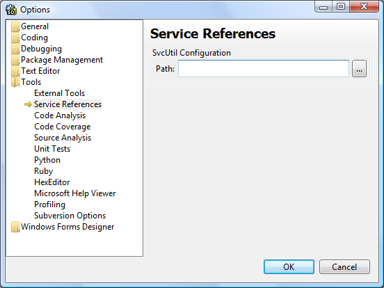
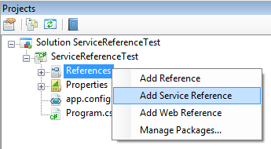
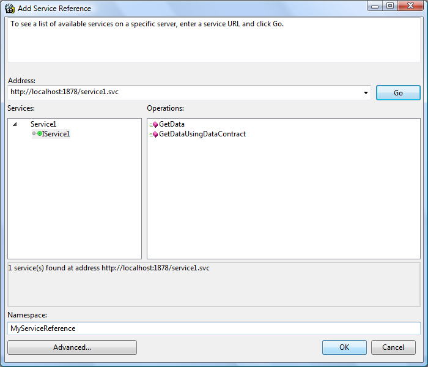
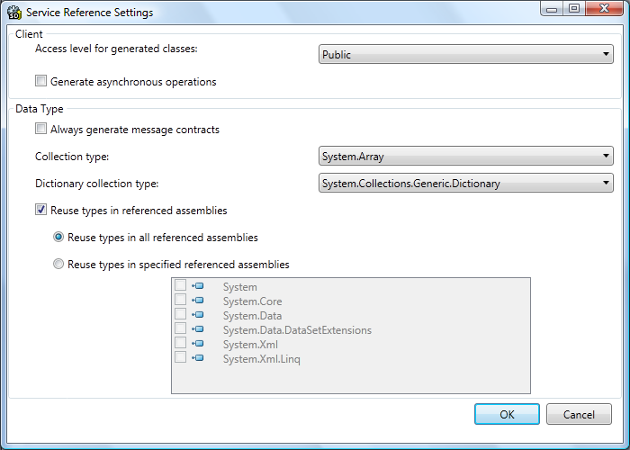
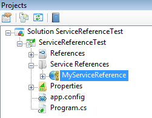

SharpDevelop 4.2 now includes support for adding references to WCF services.
Microsoft Windows SDK should be installed.
In order to generate the service reference SharpDevelop uses Microsoft's ServiceModel Metadata Utility Tool SvcUtil which is included as part of the Microsoft Windows SDK.
SharpDevelop should automatically detect where SvcUtil is installed however the path to SvcUtil can be overridden if required from the Tools - Options dialog.

To add a service reference, open the Projects window, right click on the project or the references and select Add Service Reference.

In the Add Service Reference dialog enter the url to the WCF service and click Go. The WCF service that is discovered should then be displayed.

Clicking the Advanced button will allow you to configure further generation options.

In the main Add Service Reference dialog enter a namespace for the service and then click the OK button to generate the service reference.

A service reference proxy will be added to the project and the project's app.config file will be updated with the WCF binding information.
Now you can use the WCF service in your application.